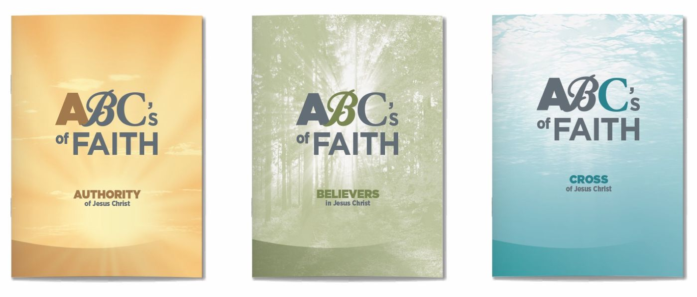
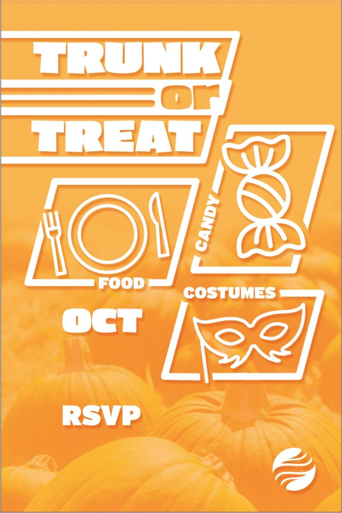
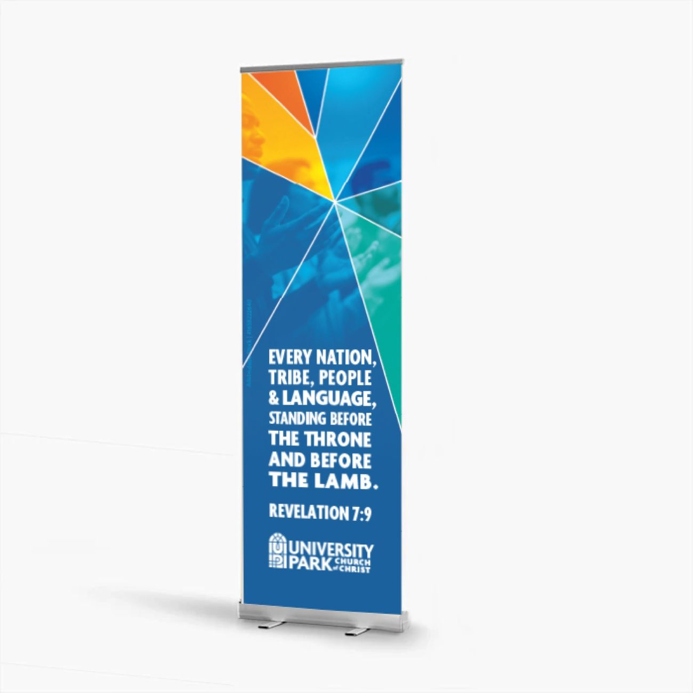
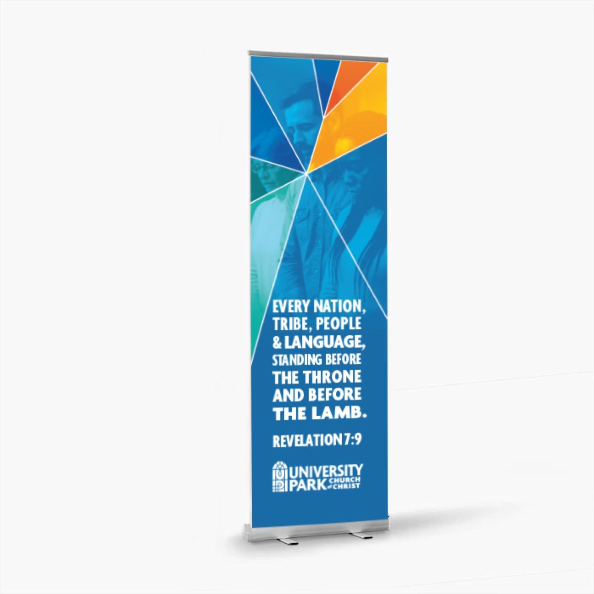
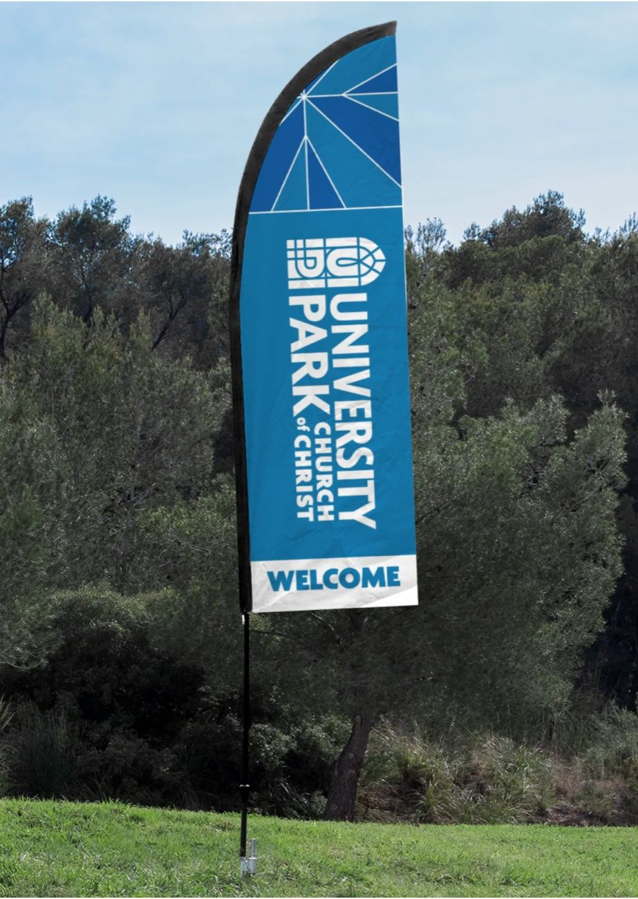
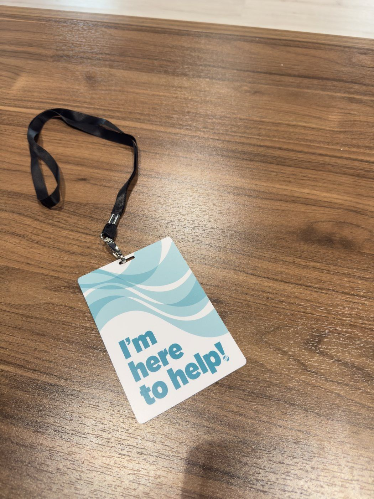
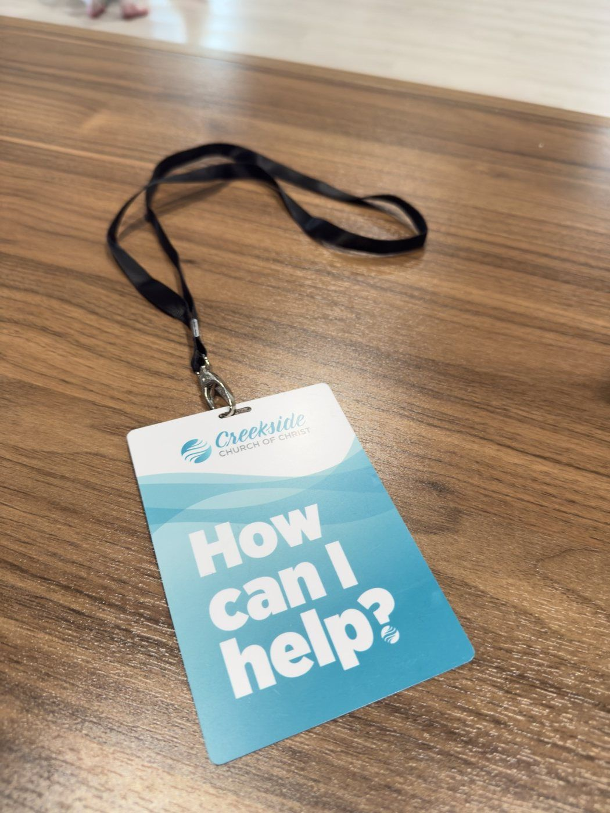
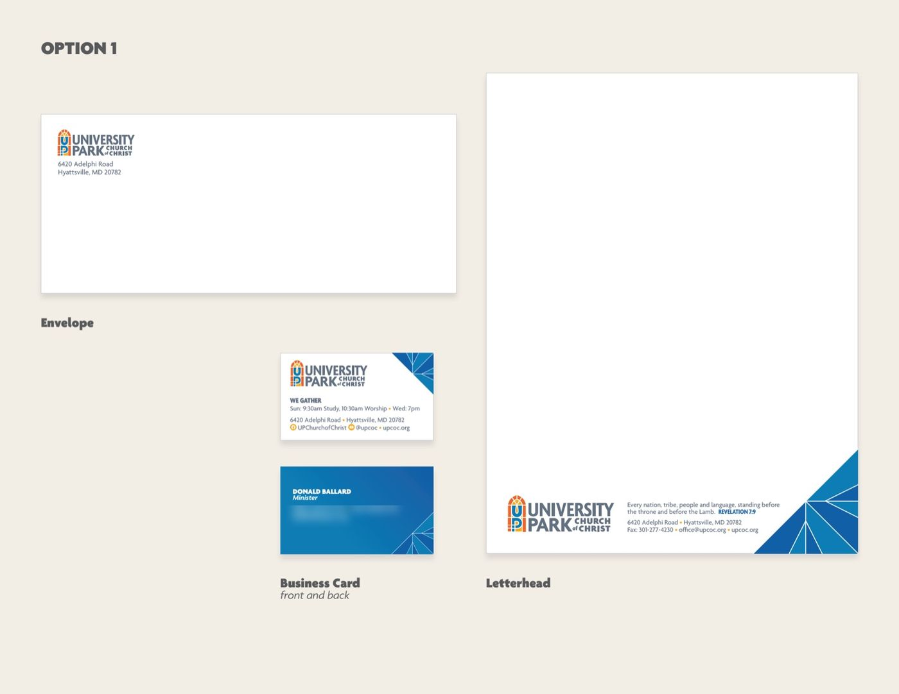
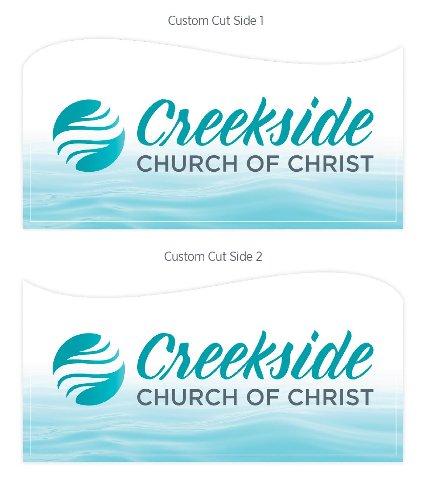
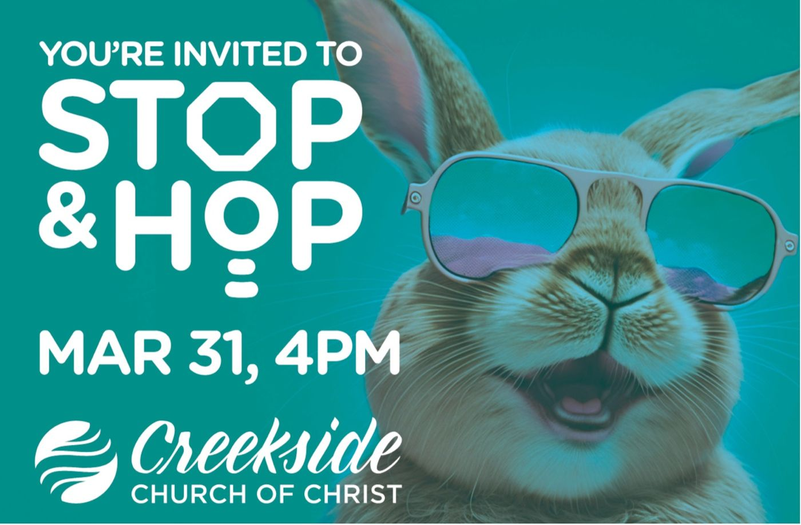

Graphic design for churches and the people who serve them.
Anna Dutton is a graphic designer in Brandon, Florida. For two decades she has made sermon series art, print, signage, and social graphics for Churches of Christ and small businesses: work that is clear, warm, and made to be used.

Selected recent work
Sermon series
Series art, slides, and the print that goes with it





Signage & environment
Banners, flags, sign faces, volunteer credentials





Branding & logos
Identity work for churches, ministries, small businesses

About
Glyphette is the design practice of Anna Dutton. Most of the work here was made for congregations: sermon series, event promotion, bulletins, signage, worship slides, and the small, steady stream of things a church needs every week.
Everything on this page is recent — roughly the last two years. It is a thin slice of a practice that has been running for two decades; the rest lives in flat files and archives, and comes out when a project calls for it.
She also takes on branding and print for small businesses and nonprofits. If you have a message that needs to be clear and look like it belongs to you, that is the job.
Contact
Working on something? Send a note about the project and when you need it. Most work begins with a short conversation.
Email Anna
Social & digital
Feed graphics, invitations, app artwork